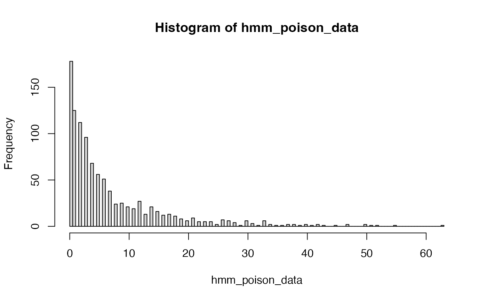

Forward-Backward Algorithm to Calculate the Posterior Probabilities of Hidden States in Poisson-Gamma Model
Source:R/MCMC_poisson.R
posterior_prob_gamma_poisson.RdForward-Backward Algorithm to Calculate the Posterior Probabilities of Hidden States in Poisson-Gamma Model
Value
List with the following elements:
F: auxiliary forward variablesB: auxiliary backward variabless: weights
Details
Please see supplementary information at doi:10.1186/s12859-024-05751-4 for more details on the algorithm.
Examples
mat_T <- rbind(c(1-0.01,0.01,0),
c(0.01,1-0.02,0.01),
c(0,0.01,1-0.01))
L <- 2^10
betas <- c(0.1, 0.3, 0.5)
alpha <- 1
sim_data <- hmm_simulate_gamma_poisson_data(L = L,
mat_T = mat_T,
betas = betas,
alpha = alpha)
pi <- sim_data$pi
hmm_poison_data <- sim_data$data
hist(hmm_poison_data, breaks = 100)

# Calculate posterior probabilities of hidden states
post_prob <- posterior_prob_gamma_poisson(data = hmm_poison_data,
pi = pi,
mat_T = mat_T,
betas = betas,
alpha = alpha)
str(post_prob)
#> List of 3
#> $ F: num [1:1024, 1:3] 0.738 0.686 0.441 0.434 0.219 ...
#> $ B: num [1:1024, 1:3] 4.8379 0.5516 0.1976 0.2955 0.0762 ...
#> $ s: num [1:1024] 0.0119 0.0663 0.1407 0.0574 0.1803 ...